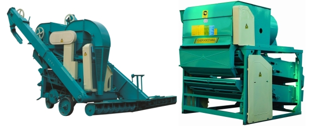
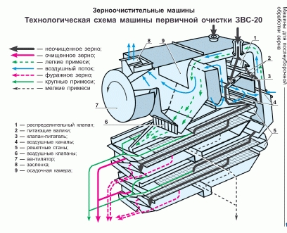
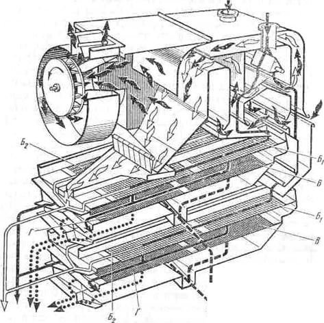
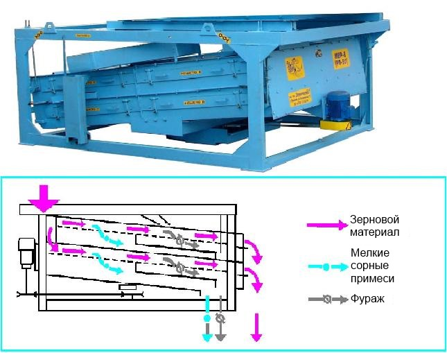
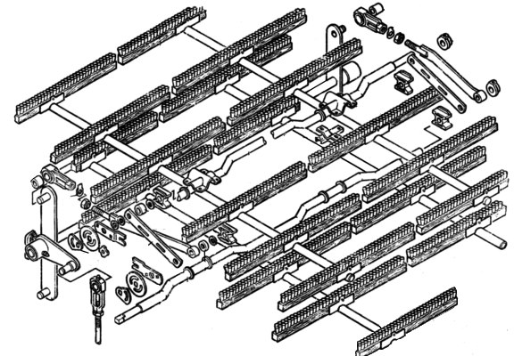
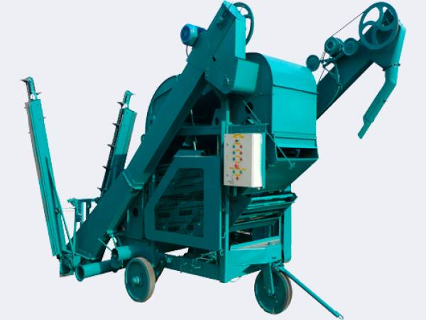

Эксплуатация очистительных машин ЗВС-20 и ОВС-25

Зерноочистительные машины ЗВС и ОВС предназначены для первичной очистки зерна на комплексах ЗАВ-25 и ЗАВ-40. В настоящее время они продолжают оставаться самыми распространенными машинами по очистке зерна. Однако по причине того, что старые машины во многом отработали свой ресурс, либо пришли в негодность из-за неправильной эксплуатации, возникло мнение, что воздушно-решетные машины ЗВС и ОВС не отвечают современным требованиям. Это не совсем так. В действительности правильно настроенные и отремонтированные ЗВС и ОВС могут быть не хуже, а то и лучше некоторых зерноочистительных новинок. В этой статье мы постараемся дать ответы на вопрос почему в одних хозяйствах они работают с хорошим результатом, в других – с прямо противоположным. Для этого сначала рассмотрим верхнюю часть машин – работу воздушных камер, затем работу эксцентрикового вала и механизма привода щеток.
Любые вопросы по работе зернотоков вы можете задать по телефону 8-905-925-3978. Мы ответим на все интересующие Вас вопросы. Звоните!
Работа воздушных камер
Воздушные камеры отделяют до 95% мертвых отходов, поэтому если они работают неэффективно, то могут сделать бессмысленной работу всего мехтока. Нужный результат очистки воздухом достигается с выполнением 3-х основных функций:
- Равномерного распределения зернового материала по всей ширине приемной камеры.
- Обеспечения скорости воздушного потока, отвечающей поставленным задачам.
- Обеспечения регулировки силы воздушного потока.
За первую функцию на машинах ЗВС-20А и ОВС-25 отвечают загрузочный шнек и клапан-питатель, на который зерновой материал поступает из шнека. В первую очередь важно следить за состоянием навивки шнека. Не менее важно состояние клапана – он должен стоять строго горизонтально без деформаций, кроме того должен пружинить и поддаваться регулировке соответствующей рукояткой (слева от приемной камеры). За равномерное распределение зерна на верхний и нижний станы отвечает делительная решетка, находящаяся снизу от лотка.
В машине ЗВС-20 зерновой материал подают два обрезиненных питающих валика. За равномерное распределение зерна по валикам отвечают два регулируемых рассекателя установленных вверху внутри приемной камеры. Обрезиненные валики с одной стороны менее травмируют зерно, с другой – быстро изнашиваются из-за попадания механических частиц – камней и твердой земли. Поэтому на зернотоках, на которых используются эти машины, завальную яму рекомендуется накрыть сеткой, либо сваренной решеткой из арматуры. Под каждым из валиков тоже стоят клапаны, принцип работы которых тот же, что и у клапанов со шнеками. Отметим также, что на ЗВС-20 два входных отверстия для зерна, поэтому, чтобы сыпь в оба из них была равномерной, над приемной камерой устанавливается течка-распределитель. Внутри нее предусмотрен регулирующий флажок, с помощью которого можно выровнять поступление зерна по обоим входам.
Эффективность воздушной очистки зависит прежде всего от герметичности воздушной камеры. Необходимо устранить даже небольшие щели. Не менее важно, чтобы диффузор и крыльчатка вентилятора были на минимальном расстоянии между собой. На ОВС диффузора нет – вместо него стоит резиновое уплотнение – чем оно ближе к крыльчатке, тем мощнее будет сила воздушной очистки. Крыльчатка должна быть отбалансированной, иначе диффузор придется максимально отодвигать, чтобы не задеть ее. К тому же биение скажется на работе всей машины и будет причиной постоянных поломок. Здесь важно убедиться, что источник сильной вибрации машины именно крыльчатка – для этого нужно запустить один вентилятор. Если вибрации нет, проблемы, если они имеются, нужно искать в нижней части машины.
Есть еще ряд причин, снижающих качество воздушной очистки. Например, наличие циклонов, которые внутри часто забиваются пылью, встречный ветер на выход воздуха, наличие нескольких поворотных колен на воздуховоде.
О проблемах с силой воздушного потока могут сигнализировать лепестки, находящиеся на ЗВС снизу средней части воздушной камеры (отстойной камере) – над отверстием для выхода мертвых отходов, на ОВС-25 за вентилятором. При работающем вентиляторе они должны быть прижаты к камере и приоткрываться только при поступлении мертвых отходов.
Функцию регулировки воздушного потока обеспечивает заслонка, расположенная на машинах ЗВС на выходе из улитки вентилятора, на ОВС – внутри поворотного воздуховода. На машине ОВС-25 предусмотрено 4 основных положения скорости воздушного потока для разных культур. Если при том или ином положении скорость воздушного потока является избыточной, для этих целей с правой стороны воздушной камеры имеется заслонка, приоткрыв которую можно убавить скорость потока. На машинах ЗВС предусмотрен маховик, который также позволяет делать как грубую, так и плавную регулировку силы воздуха. Вращая маховик и ориентируясь по составу отходов, выходящих из воздушной камеры на лоток-приемник отходов, расположенный над верхним станом, можно легко найти нужную силу воздуха. Необходимо убедиться в том, что заслонка не цепляется за стенки воздуховодов вследствие вмятин или деформации и без усилий вращается по всей траектории.
Работа привода решетных станов
Привод решетных станов осуществляется эксцентриковым валом. Это один из важных рабочих органов воздушно-решетных машин. Если он работает по каким-либо причинам неэффективно, что выражается прежде всего в сильной вибрации рамы и боковой вибрации решетных станов, то это приведет к снижению качества очистки и постоянным поломкам. А после многочисленных устранений этих поломок «на скорую руку» машина может прийти в полную негодность. В результате может не помочь и замена эксцентрикового вала.
Эксцентриковый вал осуществляет колебательные движения решетных станов с частотой 425-475 об/мин. Станы ходят навстречу друг другу вперед-назад с амплитудой колебания около 8 мм. Боковая вибрация (или биение) не должна превышать на новых машинах 2 мм., на старых 3-4 мм.
Наиболее частая причина боковых биений – износ комплектующих эксцентрикового вала, подшипников (опорных 11207 и подшипников шатунов 180212), шатунов, эксцентриков, шпоночных пазов эксцентриков, наконец – самого вала. Наиболее простой способ проверить вал на наличие износа – открутить деревянные шатуны и проверить люфт железных шатунов. Если он имеется, то нужно установить его причину, осмотрев и промерив комплектующие. Возможно, целесообразно будет поменять вал в сборе.
Другая нередкая причина проблем с валом – дефекты либо при изготовлении комплектующих, либо при сборке вала: неровная ось вала, эксцентрики со смещенными шпоночными пазами, неправильно пробитые шпоночные пазы на валу и т. д.
При самостоятельной сборке вала необходимо четко придерживаться соответствующих каталогов – их без проблем можно найти в организациях, поставляющих комплектующие. Важно чтобы эксцентрики вала двигались по валу легким постукиванием молотка, для чего подгонкой шпонок для вала должен заниматься опытный механик.
Боковое биение решетных станов иногда следствие не только проблем с эксцентриковым валом. Не меньшую роль играет деформация рамы, которая может появиться в процессе эксплуатации машины, или в результате каких-либо внештатных ситуаций (например машину уронили или тащили волоком при монтаже) . Пытаться восстановить геометрию рамы задача практически невыполнимая. Но свести на нет или частично решить эту проблему можно – добившись, чтобы подвески стояли строго вертикально, а станы не были наклонены на одну из сторон. В месте соединения деревянных шатунов и станов нужно, чтобы шатуны при прикручивании не деформировались. Иногда шатуны сделанные по стандарту могут не подойти к машине по отверстиям и здесь рекомендуется сперва прикручивать их к стану, затем к валу, так как на шатунах вала для этого сделаны небольшие пазы. Если длины пазов недостаточно, лучше сделать деревянные шатуны по месту, чем пытаться любой ценой натянуть стандартные.
Работа эксцентрикового вала требует постоянного внимания. Особенно тщательно нужно следить за тем, чтобы были затянуты болты деревянных шатунов. Опытный механик сразу заметит изменения в работе машин – с ослаблением натяжки болтов боковая вибрация станов будет увеличиваться. Чтобы этого не случилось, нужно обязательно ставить контрагайки (для этого болты должны быть соответствующей длины), а также металлические пластины и усиленные шайбы. Например, болты за несколько дней работы могут «врезаться» в отверстия чугунного шатуна на валу (чугун, как известно, очень мягкий металл).
Что касается регулировки положения деревянных шатунов на валу, то в идеале они должны стоять перпендикулярно эксцентриковому валу, так что подставив к валу угольник легко можно определить куда двигать шатун.
Одно из главных условий для работы воздушно- решетной машины это устойчивое основание. Нередко приходилось убеждаться, что проблемы начинались именно по этой причине – машины привязывали к деревянному полу или к бункерам, но с деревянной подушкой. В итоге машина проседала, от недостаточной устойчивости начинались проблемы в работе эксцентрикового вала и вентилятора. Поэтому рекомендуем поставить машины на положенные по уровню швеллеры, проложенные вдоль рамы и привязанные к бункерам. Причем привязать машины к швеллерам не сваркой, а болтами.
Завершая обзор работы эксцентрикового вала отметим проблемы, которые могут возникнуть вследствие использования несоответствующего электрооборудования и шкивов. Что касается привода эксцентрикового вала на машинах ЗВС-20 и ЗВС-20А, то во-первых, нельзя ставить электродвигатель 1420 (вместо 940 )об/мин. При резком повышении оборотов машина вероятнее всего переломает деревянные шатуны через несколько секунд после включения. Недопустимо также ставить несоответствующий шкив на вал электродвигателя (на нем ставится двухручьевый шкив диаметром 112 мм.). Кроме того, как уже отмечалось, на машинах ЗВС существует два режима частоты колебаний эксцентрикового вала – с запитыванием шкивов 224 (475 об/мин) и 250 мм (425 об/мин). Первый режим, предусмотренный для работы с материалом повешенной влажности, использовать на машинах работающих не первую пятилетку не рекомендуется.
Аналогичная ситуация может случиться на машине ОВС-25, на которой эксцентриковый вал приводится в движение шкивом вентилятора, который в свою очередь вращается от электродвигателя 1420 об/мин. со шкивом диаметром 236 мм. Использование увеличенного размера шкива здесь приводит к повышенным колебаниям решетного стана.
Работа привода щеток
От работы щеточной очистки (как и от подбора решет) зависит эффективность сортировальной очистки. Хотя часто настройке механизмов привода щеток не уделяется должного внимания. Возможно это происходит потому, что привод щеток может и не докучать постоянными поломками как например разбалансированная крыльчатка или бьющий эксцентриковый вал, обычно не дающие механикам соскучиться. В результате он работает, но с минимальной пользой. Попробуем разобраться почему.
Начнем с машины ЗВС-20А. Привод щеток здесь запитан от двигателя 2.2 кВт. 940 об/мин, который ремнем Б-900 вращает редуктор Ц2У-125-31.5. Последнее цифра здесь указывает передаточное число, в которое он преобразует обороты двигателя – поскольку шкивы двигателя и редуктора равны по диаметру (112 мм.) получается около 30 оборотов в минуту на выходе (на втором валу, на который насаживается кривошип). Эта цифра поможет определить подойдет ли для ЗВС безымянный редуктор без маркировки – за 30 оборотов на приводном валу, второй вал должен пройти на один круг. Если есть сомнения в редукторе, то его нужно вскрыть и просмотреть на износ передаточных шестерен, заодно убедиться есть ли в нем масло для смазки шестерен. При сильном износе рекомендуется заменить редуктор, так как в крайнем нижнем и крайнем верхнем положении кривошипа его шестерни могут перескакивать на зуб. Эти перескакивания, заламывающие детали привода станут причиной постоянных поломок – может оторваться площадка редуктора, лопнуть шток, головка водила или трехплечий рычаг.
Не менее важно, чтобы площадка редуктора была ровной и без трещин. Рекомендуется усилить ее, пробросив поперек рамы уголок или швеллер. Ровная, выставленная по уровню площадка избавит от проблем с износом ремня Б-900, а кривошип не будет заламывать шток водила.
Водило (или демпфер) осуществляет вращение вала привода щеток. Сложности с его использованием возникают из-за того, этот рабочий орган может отличаться от образца, представленного в каталоге. В настоящее время обычно в его комплект входят нижняя головка водила (соединяемая с кривошипом переходным пальцем), шток, верхняя головка, соединяемая с трехплечьим рычагом вала привода щеток, а также две пружины для более плавной работы в крайних положениях («мертвых» точках), несколько шайб и гаек . Чтобы водило не было источником постоянных неполадок необходимо правильно выставить его длину и обеспечить чтобы оно ходило строго вертикально по уровню. Выставить длину можно регулировкой нижней головки водила и верхней гайкой и ориентируясь по положению рычагов вала привода щеток – нужно, чтобы они в крайних положениях не задевали подвески. Чтобы обеспечить строго вертикальную траекторию движения водила иногда требуется изготовление верхней головки с удлиненной осью по месту, так как трехплечий рычаг ставится исходя из положения шатунов привода щеток, и может получиться несовпадение положения водила и рычага.
Вал привода щеток, состоящий из трехплечьего рычага , двухплечьего рычага, оси, двух опорных корпусов, обеспечивает возвратно-поступательное движение щеткодержателей, с которыми он соединяется четырьмя рычагами. Двух и трехплечие рычаги выставляются таким образом, чтобы рычаги привода щеток стояли параллельно решетным станам. Важно чтобы положение рычагов вала привода щеток было строго параллельным по отношению друг к другу. Иначе щеткодержатели, а соответственно и щетки будут ходить внутри решетных станов не прямо, а со смещением в одну из сторон.
Несоответствие положений рычагов вала привода щеток может возникнуть по двум причинам: во-первых, после «быстрого» ремонта, когда после износа шпоночных пазов их попросту приваривают к валу, забыв правильно выставить; во-вторых, из-за брака в изготовлении – ступицы рычагов приваривают в разном положении. Первую проблему можно решить только срезав сварку (если это возможно) на обном из рычагов, выставить правильно, приварить обратно, или заменить вал. Чтобы решить вторую проблему ступицу нужно аккуратно срезать, сточив сварочные швы, правильно выставить и приварить обратно. Чтобы этого не делать, полезно брать собранный вал или хотя бы рычаги парами, сопоставив положение щпонпазов.
Ось вала крепится на опорах и фиксируется стопорными контрагайками, которые ставятся с внутренней стороны рычагов. Важно знать, что хотя они и фиксируют вал в одном положении, но в случае, если водило ходит по траектории не строго вертикально стопоры быстро выдавит и вал вместе с рычагами будет ходить вправо-влево. Капроновые втулки опорных корпусов при этом будут постоянно выпадать.
Рычаги привода щеткодержателей соединяют вал привода щеток с коленчатыми валами щеткодержателей. Два верхних длинных рычага крепятся к нижнему коленвалу верхнего стана, два коротких – к верхнему на нижнем стане. В основном износу на них подвержены металлокерамические втулки 25Х32 (иногда 25Х29) на головках, которые меняют на аналогичные пластмассовые, и металлические втулки в месте соединения с коленвалами (их вытачивают по образцу, обычно это размер 25.5Х30). Кроме того рычаги при необходимости нужно выровнять и установить таким образом, чтобы ползуны станов в крайних положениях вписывались в длину направляющих уголков. Правые рычаги должны соответствовать по длине левым, иначе щетки будут ходить по неправильной траектории.
Коленчатые валы решетных станов опираются на ползуны, внутреннее отверстие которых 25 мм. Поэтому чтобы определить износ валов, достаточно промерить их штангенциркулем. При большом износе рекомендуется либо заменить, либо отремонтировать наплавив в местах износа сваркой и проточив на токарном станке.
Основная проблема в работе коленчатых валов – несоответствие их длины ширине станов. Это происходит потому, что решетные станы машин ЗВС-20 уже, чем на ЗВС-20А на 3 см. Соответственно и коленчатые валы различаются. Из-за этой путаницы в размерах получается, что на машинах ЗВС-20 с коленвалами от ЗВС-20А они смещаются влево, смещая и щеткодержатели вместе с щетками. При обратной ситуации щетки будут смещены вправо, а длина коленвала окажется недостаточной – приходится жертвовать шайбами, между ползунами, рычагами и планками. Поскольку большинству машин на мехтоках не один десяток лет, поэтому высока вероятность, что к примеру решетные станы были поменяны а коленвалы нет, или наоборот. Сложность и в том, что даже новые коленвалы продают двух разных стандартов причем могут быть указаны как комплектующие на ЗВС-20А. Поэтому их соответствие станам нужно обязательно проверить.
Смещение щеток в одну из сторон – одна из главных причин их неэффективной работы. С одной стороны на решетах появляется необслуживаемая полоса, с другой деревянные края щеток попадают на уголки рамок в результате не будут должным образом поджаты. О подобных проблемах не трудно догадаться, осмотрев щетки – если деревянные концы щеток заходят за края рамок, то будет заметно выработку (при этом нужно убедиться, что они стоят строго по центру щеткодержателя).
Работа щеточной очистки зависит и от состояния щеткодержателей, которые бывают двух видов: с трубами, с насаженными на них уголками или с приваренными на них креплениями для щеток. При первом варианте щеткодержатели более подвержены износу, так как уголок соединенный с трубой хомутом находится в постоянно подвижном состоянии (щетки при возвратно-поступательном движении наклоняются то в одну, то в другую сторону). При втором варианте крепление устойчивее к износу, но иногда отрывается в местах сварки. В настоящее время в продаже можно найти щеткодержатели обоих типов. Но при любом выборе существует риск приобрести некачественный товар – дело в том, что паз посередине трубы щеткодержателя под коленвал может оказаться сделанным со смещением на бок в результате чего целый ряд из шести щеток может оказаться заваленным на одну сторону. На глаз этот брак определить очень сложно. Немного проще заметить отверстия под хомуты уголков, просверленные не в одной плоскости, из-за чего уголки могут стоять не параллельно друг другу, или не в одной плоскости приваренные крепления. Но если брак все-таки обнаружился при установке, рекомендуется снять щеткодержатель и переделать – пересверлить отверстия под шплинты, или срезать и переварить крепления щеток.
Коленвалы и щеткодержатели соединяются штампованными хомутами, которые также подвержены износу. Поэтому при замене щеткодержателей на новые рекомендуется поменять и хомуты, иначе может получиться, что соединение будет не плотным. Старые хомуты нужно внимательно осмотреть на наличие трещин. При соединении щеткодержателей и хомутов нужно закручивать болты очень аккуратно, постоянно проверяя вращение коленвала. Нужно добиться, чтобы коленвал регулировался с умеренным усилием. Прикрученные хомуты необходимо фиксировать контрагайками.
При сборке привода щеток важно руководствоваться каталогом. Регуляторы положения щеток при наличии выработки необходимо поменять на новые, которые напильником необходимо подогнать под отверстия коленвала. Положение регулятора должно обеспечивать поджатие щеток. Если этого не происходит, возможно центральный сектор регулятора нужно развернуть. Поджатие щеток должно обеспечивать плотное прилегание щеток к решетам. Перед тем как поджимать щетки нужно поднять эксцентриковые зажимы, расположенные на станах.
Поджав щетки необходимо убедиться, что они ходят строго по решетному полотну, не заходя за его пределы. Для этого машину желательно покрутить вручную (вращая ремень Б-3150), посмотрев на щетки в крайних положениях. Если щетки заходят за пределы решет следует развернуть коленвалы. На машинах ЗВС изгибы всех коленвалов должны быть направлены в одну сторону.
Следующее, на что следует обратить внимание при ручном вращении машины, что все ползуны не заходят в крайних положениях за пределы направляющих уголков. Если это происходит, то нужно отрегулировать рычаги привода щеток. Нужно также замерить диапазон движения щеток, который должен быть не менее 28 см. Если он меньше, то на решетах появятся необслуживаемые полосы, которые на верхних решетах забьются сорными примесями, а на нижних чистым зерном. В результате от вибрации примеси окажутся в чистом зерне, а зерно с нижних решет будет проскальзывать в сортировальные отходы. Диапазон хода щеток можно увеличивать регулировкой длины водила – гайкой над нижней головкой водила увеличивается ход щеток в одну сторону, гайкой над верхней головкой – в другую.
Ремонт привода щеток не приведет к желаемому результату, если решетные станы и рамки будут в плохом состоянии. Решетные станы рекомендуется ремонтировать в первую очередь, когда убраны все комплектующие привода щеток. На машине ЗВС-20А нужно просмотреть состояние резиновых уплотнений на боковинах станов. На порванных уплотнениях отходы поступают в зерно с верхних решет, а зерно в отход с нижних (на стыке передней и задней части решетной рамки). Задние течки решетных станов внутри необходимо просматривать на наличие щелей и трещин. Эксцентриковые зажимы должны обеспечивать поджатие рамок, не прокручиваясь по кругу. Если это не так – их нужно заменить. Необходимо убедиться, что все внутренние направляющие и прижимные детали не отломаны, не деформированы, иначе установка решетных рамок может доставить большие проблемы.
Очень важную роль в работе машины играет состояние рамок. Во-первых, из-за их износа на стыке передней и задней части образуется щель, через которую зерно идет в отход и наоборот (при работающей машине нетрудно заметить, как на стыке нижних рамок зерно по всей их ширине проходит через щели). Кроме того из-за плохого состояния рамок решета стоят «волнами», из-за чего хуже становится поджатие щеток, снижается срок их службы.
ОВС-25С
Рекомендации по работе этой машины аналогичны тем, что даны для ЗВС-20А. Но есть и отличия. Так возвратно-поступательные движения вала привода щеток обеспечивает не редуктор, а 72-х зубая шестерня, которая крепится внизу рамы. Она в свою очередь приводится в движение от 12 зубой шестерни, расположенной на шнеке отходов. Шнек отходов запитан от эксцентрикового вала. На ремне Б-2000 от вала до шнека ставится натяжной шкив с пружиной. Если пружина не достаточно жесткая, или поставлена не с той стороны (натяжной шкив должен стоять сверху и давить вниз), то привод щеток будет пробуксовывать. Кроме того на работу привода щеток может повлиять и недостаточное натяжение ремня Б-2800 от вентилятора к эксцентриковому валу (здесь также стоит натяжной шкив, регулируемый рычагом на раме).
На ОВС-25 работа водила зачастую зависит то состояния 72-зубой шестерни, ее опорного корпуса и подшипников, состояния самого водила. Необходимо прежде всего убедиться погнута ли шестерня – в большинстве случаев неровным оказывается ее вал. Нужно проверить люфт шестерни – в большинстве случаев изношено посадочное место под подшипники 180205, нередко и сами подшипники. Менять лучше весь узел в сборе, а также водило, т. к. его конструкция может отличаться от заводской. На 72 зубой шестерне вместо паза вваривается корпус подшипника 180205. На водило в свою очередь снизу ставится головка с пальцем (такая же как на водиле ЗВС-20А сверху), смягчающие пружины на ОВС-25 также стоят снизу. По сути водило ОВС-25 напоминает перевернутое на ЗВС-20А, но шток здесь длиннее.
Детали привода щеток на ОВС-25 и принцип их работы практически не отличается от рассмотренного на ЗВС-20А, за несколькими особенностями. Так рычаги привода щеток здесь с нерегулируемой длиной (то есть цельные без головок). Щеткодержатели на ОВС-25 как известно стоят в один ряд, решетные рамки цельные (с размером решет 790Х990 в отличие от 940Х790 на ЗВС-20А). На станах внутри боковин станов уплотнений нет, но есть в задней части станов за каждой из 4-х рамок. Также как на ЗВС-20А при ремонте станов нужно обратить внимание на состояние внутренних направляющих рамки уголков, проверить станы на наличие трещин.
В заключение отметим, что мы не стали рассматривать ЗВС-20 с эксцентриковым валом, расположенном на решетном стане. Дело в том, что отсутствие на них запчастей делает ремонт невозможным. Поэтому рекомендуем полностью переделать раму этой машины под эксцентриковый вал с ЗВС-20А. Станы можно оставить, срезав на них крепления вала. Кроме того, что станы с ЗВС-20 немного уже и конструкция рамок здесь несколько другая (боковые уголки развернуты как на ОВС-25, соответственно и резиновые уплотнения по бокам отсутствуют) они по существу почти ничем не отличаются от станов с ЗВС-20А.